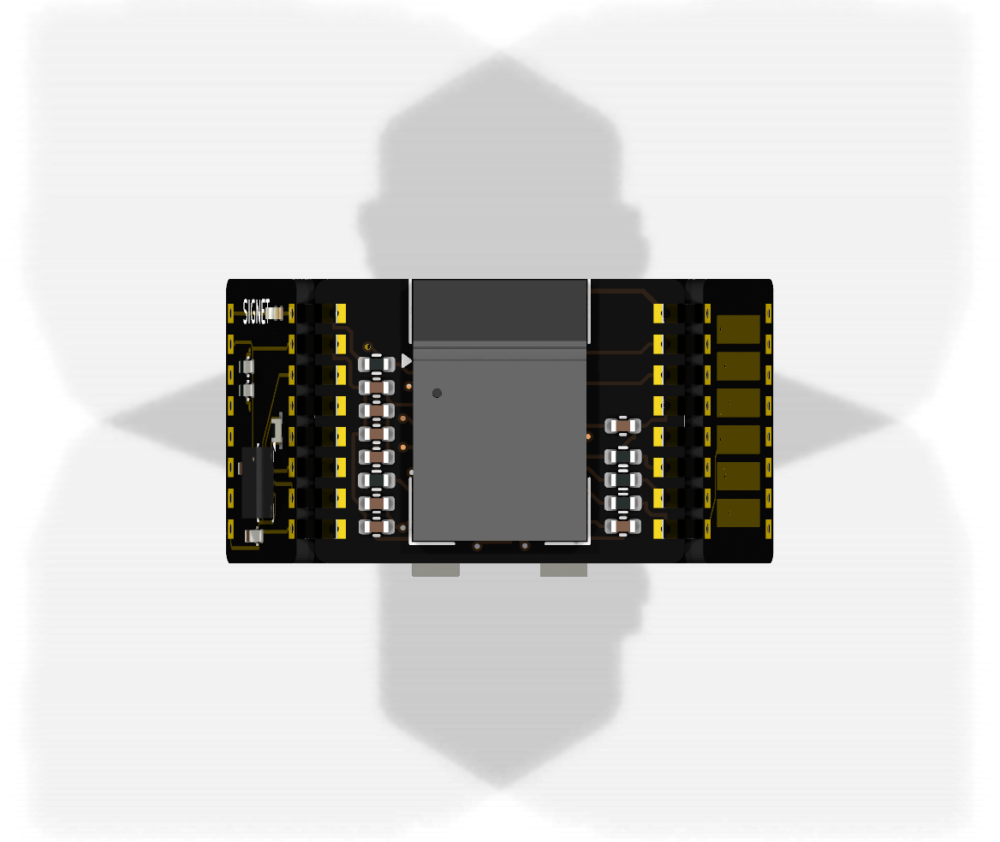
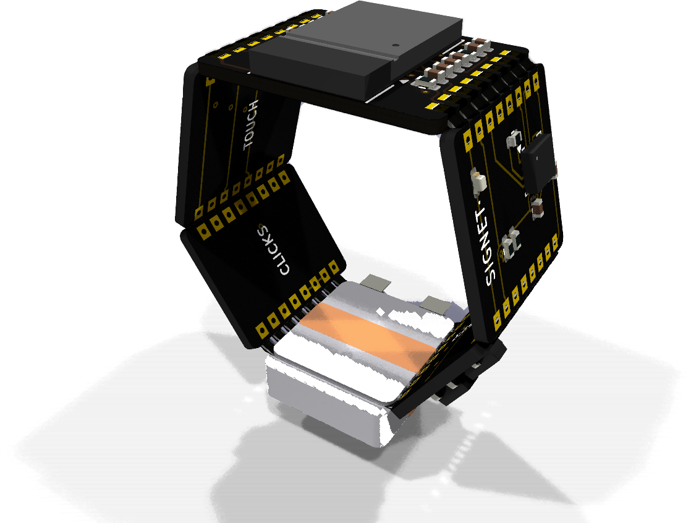

Examples · examples/ring-mouse/v0.4
Signet
A mouse you wear as a ring
Six small boards sit on the faces of a hexagonal ring round the index finger, each soldered to the next along its edge. Turn the ring's crown toward the thumb: the ring turns with the hand and the cursor follows its gyroscope; the thumb slides along the scroll strip to scroll, and presses the clicks tile for the left and the right button. The ring talks Bluetooth LE to the computer as an ordinary HID mouse and charges on a post through 2 pads inside it.
- v0.4
- GREEN on all 6 boards
Drag to turn the board. KiCad's render of it, 36 views, 10 degrees apart.


Checks
The four checks on Signet v0.4
The verdict of the last run, as its gates report records it: GREEN on all 6 boards.
- signet_radioGREEN with 2 warnings (nothing to run for: sim)
- signet_touchGREEN (nothing to run for: sim)
- signet_clicksGREEN (nothing to run for: sim)
- signet_cellGREEN (nothing to run for: sim)
- signet_powerGREEN with 1 warning
- signet_motionGREEN (nothing to run for: sim)
How it was built
Every step of the design, with what it changed
Each step as the README's "What changed" sections (v0.4/README.md) records it, oldest first.
The first ring
Black faces, solder in the joints, the cursor
The first pass of the loop (
../LOOP.md) judged v0.1 against its checklist.A light the wearer sees, a guard on the charging pads, room between the joint pads
The second pass of the loop (
../LOOP.md) judged v0.2 against its checklist.A ring that closes
The third pass of the loop (
../LOOP.md) judged v0.3 against its checklist, and measured the assembly against the boards' own geometry.
What is open
What is still to be done on this board
- The touch tile is 12.176 mm wide now and its stripes still 7.4 mm long: a wider strip gives the thumb more to find, if the clicks' 2 lines still cross it on the inner layers.
- The joint beside the radio turns 75.9 degrees: its fillet spans 1.25 mm between the 2 boards' outer corners, against 0.70 mm at a 47.3-degree joint. A wetting test on 2 coupons at that angle says whether the pads need to reach closer to the edge.
- The ring is 12 mm wide all round. Tiles narrower on the palm's side would sit better between the fingers; the joints there would then be shorter than 8 pads at 1.3 mm.
- The cell holds about 20 mAh. The ring's draw while connected is not measured, so its hours of use are not known; the clicks tile's outer face has no room for a second cell.
- No deck holds the touch strip's charge transfer: the TSC's pulse times are in ST's reference manual, which was not read in this session.
- The LSM6DSL's axes in its package (
AIR_CHIP_X,_Y,_Zinfirmware/src/air.h): from its datasheet's axis figure, not read in this session; check with the ring turned by hand. - ST's datasheet (DS13252) was not read: check the supply pins' hookup and decoupling, and the RF_OUT to ANT_IN link, against it before an order.
- The antenna lies 1.1 mm from the skin; ST tuned it for free space. Measure the range on a hand.
Three more in its README.